Navigation (primary)
Style
Elements in the primary navigation are high in contrast so they stand out to visitors and meet accessibility guidelines. The primary navigation looks similar in style to the Footer for a consistent user experience across websites.
Expandable tray
When menu text in Zone 2 is selected, an expandable tray will appear. It is divided into three parts and is styled the same across all primary navigation instances.
- Tab - visually informs a visitor of what menu they selected
- Tray - the area to place content, links, etc.
- Overlay - separates tray content from website content underneath
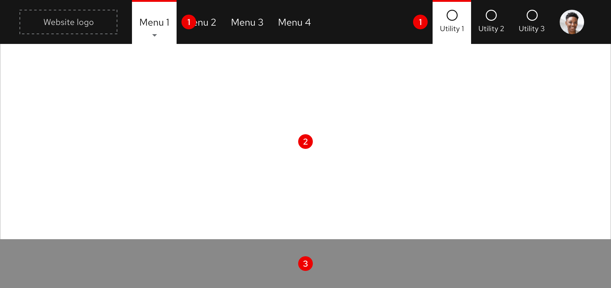
Expandable tray tab
When the expandable tray tab appears, text and icon colors are reversed. A tab with a white background and red bar will also appear behind content.
Helpful tip
Menu text displays a gray arrow on hover to indicate that an expandable tray will appear when triggered.
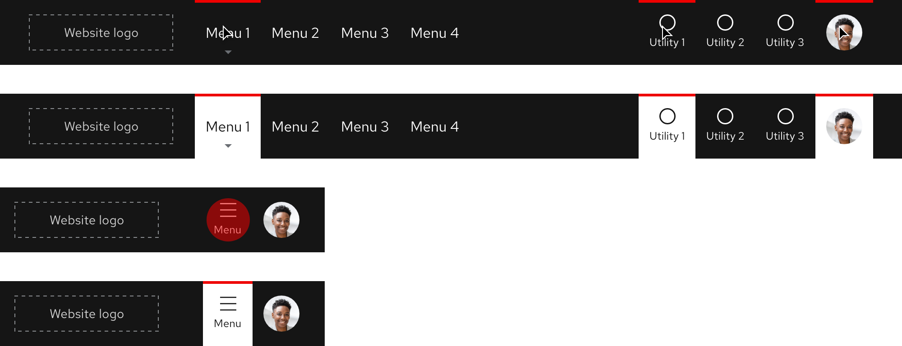
Layout
The primary navigation spans the entire width of the browser window on all breakpoints.

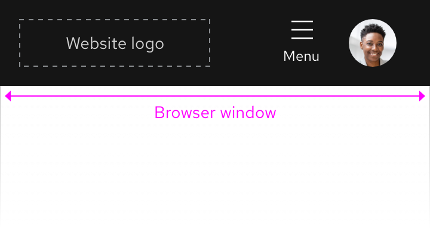
Left-to-right languages
When content is translated to other left-to-right languages, the primary navigation maintains the same layout and text size.
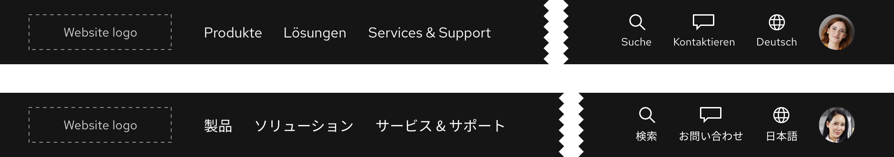
Right-to-left languages
When content is translated to a right-to-left language like Hebrew, the text size increases so visual subtleties of unique characters are easier to notice.

Responsive design
Large breakpoints
Both menus and utilities are visible in the primary navigation on large breakpoints.

Medium breakpoints
As breakpoints become smaller, menus will collapse into a utility and accordion. This includes full-width and fixed-width expandable trays. On tablet breakpoints, a menu utility replaces the horizontal list of menus and maintains the same position for a smoother transition from large to small breakpoints.

Small breakpoints
On small breakpoints, the menus and most of the utilities collapse into a menu and accordion.
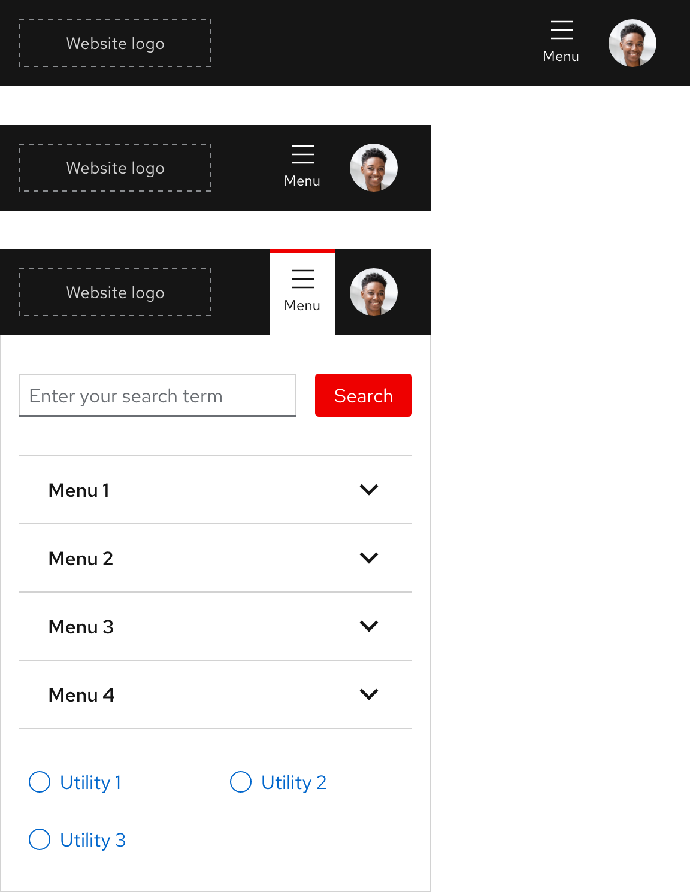
Best practices
Content overload
Do not overload the primary navigation with too many menus and utilities.
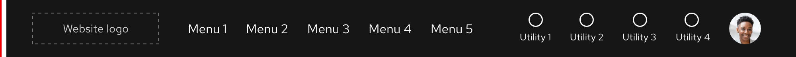
Using icons alone
Do not rely on icons alone to accurately represent content or actions, ambiguity will not help visitors find what they need.
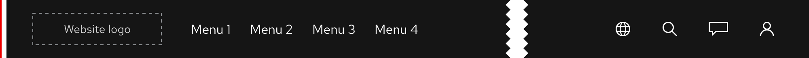
Change spacing
Do not change the spacing between menus and utilities.

Hiding menus and utilities
Do not hide menus and utilities on large breakpoints.
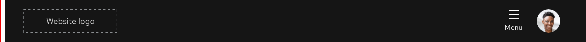
Mixing expandable trays
Do not mix the full-width and fixed-width expandable trays within the same menu group.
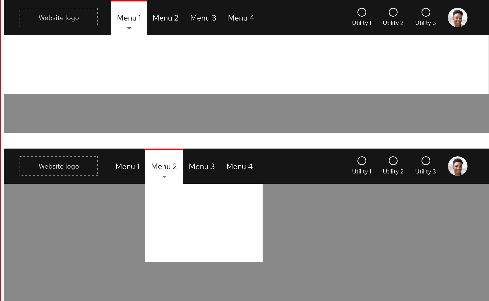
Spacing
The primary navigation uses spacers to define space values between elements.
Extra large breakpoints
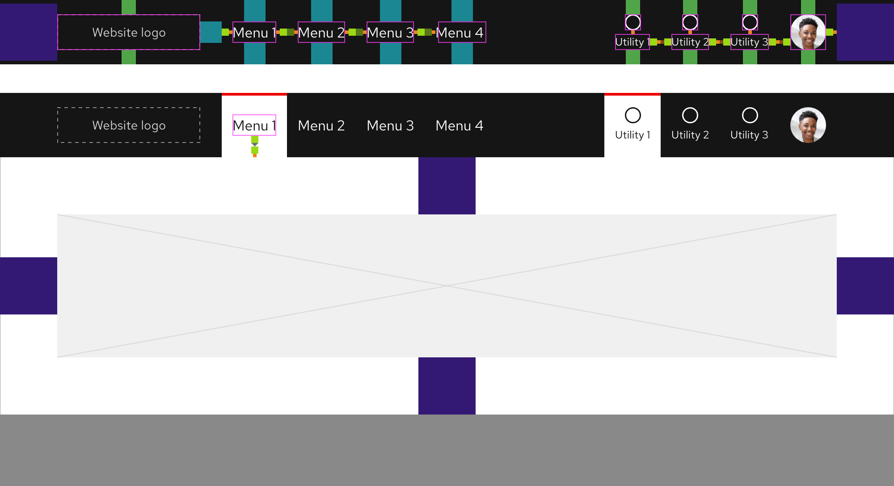
Large breakpoints
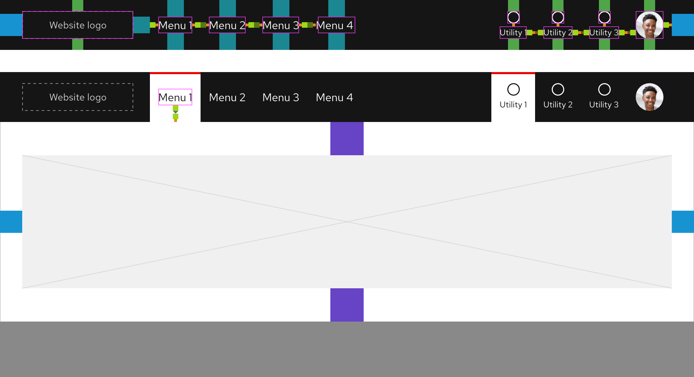
Medium breakpoints

Small breakpoints
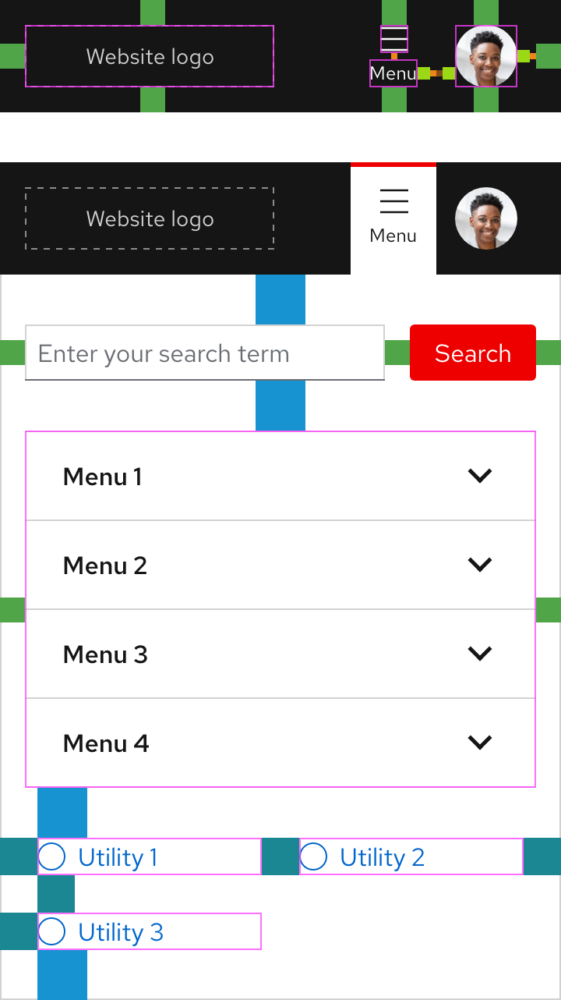
Fixed-width expandable tray

Red Hat legal and privacy links
- About Red Hat
- Jobs
- Events
- Locations
- Contact Red Hat
- Red Hat Blog
- Diversity, equity, and inclusion
- Cool Stuff Store
- Red Hat Summit
Red Hat legal and privacy links